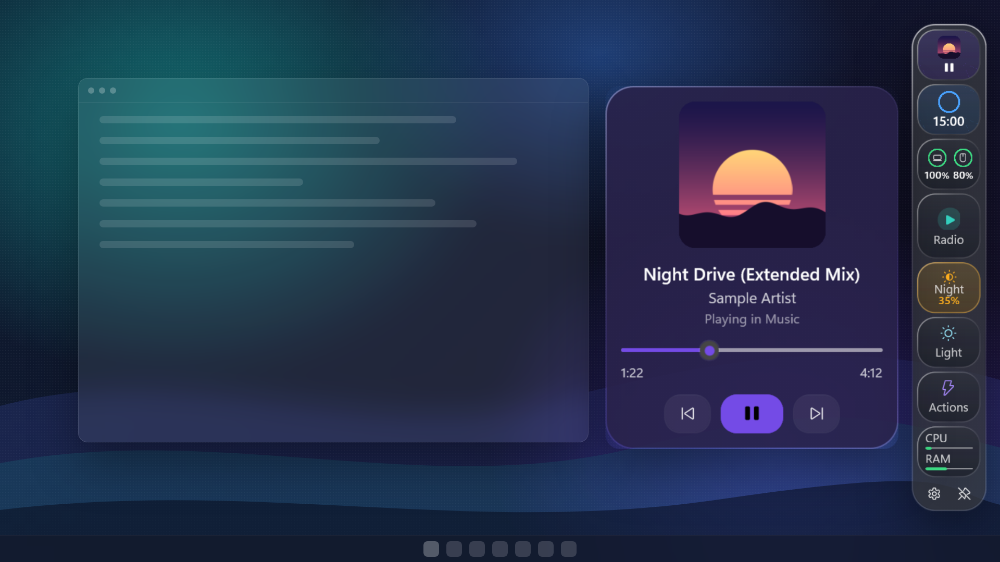

Dockline
DocklineYour widgets, on the edge of your screen
Music, a focus timer, battery and more in one slim glass bar for Windows 11. Your taskbar stays exactly as it is.

then one price, no subscription

Built to be safe to try
Most Windows customization tools patch the taskbar or Explorer. Dockline does not.
Leaves Windows alone
No taskbar replacement, no Explorer patches. Uninstall it like any Store app and there is nothing to undo.
Never steals focus
Click the bar while you type in another window. Your cursor stays where it was.
Fast and native
A native Windows 11 app that shows up in about a fifth of a second and stays quiet in the background.
One click to the things you check all day
Pick the widgets you want and put the bar on any edge.
Stay in flow
Start a focus session from the bar and hear a gentle sound when it is time for a break. The ring is always in view, so you never need to check your phone.

Battery and devices at a glance
Your laptop battery and your connected Bluetooth devices. Many mice and keyboards report their battery to Windows; some headphones do not, and Dockline says so instead of guessing.

A warmer screen for your evenings
Turn Night Light on and set its warmth right from the bar, without digging through Settings.

Buy once. Every new widget is yours.
A new widget about every two weeks, free for everyone who bought Dockline. You choose which one comes next.
Suggest
Ask for the widget you miss, from a calendar to a clipboard history.
Vote
The most-voted idea is built next. See the board.
Get it free
It arrives as a normal Store update. No add-on, no subscription.
Try every feature free for 7 days
Then buy it once from the Microsoft Store. No subscription, no account, no ads.
Questions
Does it replace my taskbar?
No. Dockline is a separate bar. The taskbar, Start menu and system tray stay exactly as Windows made them. Many people auto-hide the taskbar and keep Dockline visible, but that is up to you.
Which music apps work with Now Playing?
Any app that shows up in the Windows media controls: most music apps, video players, and browsers playing YouTube or other sites.
Will it cover my windows?
Choose: float over windows, auto-hide until you point at the edge, or reserve its space so windows stop beside it.
Does it work on Windows 10?
Yes, Windows 10 version 2004 or later, with a solid background instead of glass. Windows 11 is recommended.
What happens after the trial?
The bar hides itself and Settings offers the purchase through the Microsoft Store. Your layout is kept, so it comes back exactly as you left it after you buy.
Do you collect my data?
No account, no ads. Your settings stay on your PC. Privacy policy.